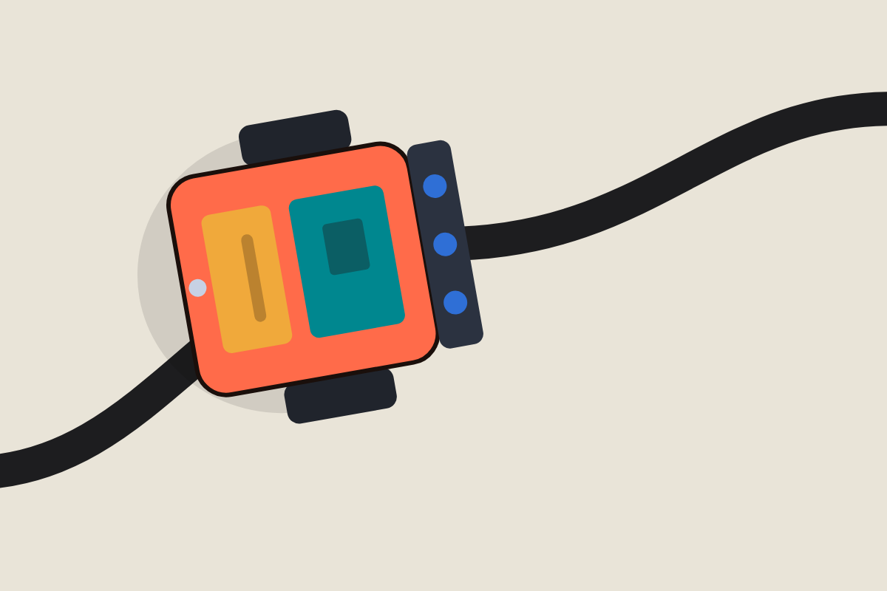
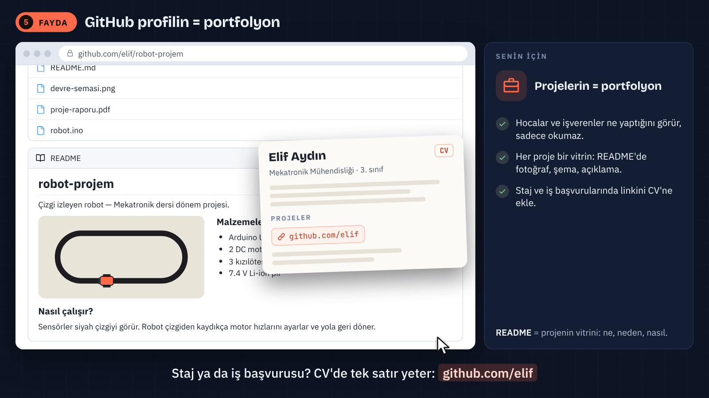

Bugün çizgiyi kaybediyor. Teslim yaklaşıyor.

Elif + Deniz · Bir robot · Ortak karar arayışı
GİT VE GİTHUB · 45 DAKİKA
Bugün çizgiyi kaybediyor. Teslim yaklaşıyor.
Arif Solmaz
İSTÜN Mekatronik Mühendisliği

Elif + Deniz · Bir robot · Ortak karar arayışı
01 · ROBOTUN İZİNİ BUL
Elif başka, Deniz başka bir “son sürüm” gönderdi.

“SON” yazmak, geçmişi kaydetmek değildir.
01 · ROBOTUN İZİNİ BUL
Takımın eksikliği kod miktarı değil, değişikliğin izi.
Kod dosyaları, birkaç kopya ve iki kişinin hatırladıkları.
Ne değişti? Neden değişti? Hangi hâlden devam edeceğiz?
İlk hedef: hatırlamak yerine karşılaştırmak.
01 · ROBOTUN İZİNİ BUL
Geçmişte bir iz var: sensör eşiği 500 → 900.

Değişikliği bulduk. Doğru eşiği henüz bilmiyoruz.
01 · ROBOTUN İZİNİ BUL
GIF’teki sayılar örnektir. Gerçek eşik ölçümle seçilir.
// robot.ino — çizgi izleyen robot
int HIZ = 200; // düz yolda hız
int VIRAJ_HIZI = 120; // virajda hız
int ESIK = 900; // sensör eşiği// yorum açar; int tam sayı değişkeni tanımlar.HIZ = 200 düz yol, VIRAJ_HIZI = 120 viraj hız ayarıdır.ESIK = 900 sensör okumalarını karşılaştıran eşiktir.= verir. ; tanımı bitirir.01 · ROBOTUN İZİNİ BUL
Bu parça pinleri hazırlar. Motoru süren devam kodu gösterilmiyor.
void setup() {
pinMode(5, OUTPUT); // sol motor
pinMode(6, OUTPUT); // sağ motor
}setup() her açılışta veya sıfırlamada bir kez çalışır. void değer döndürmez.pinMode(5, OUTPUT) sol motor sürücüsü sinyal pinini çıkış yapar.pinMode(6, OUTPUT) sağ motor sürücüsü sinyal pinini çıkış yapar.{ } işlemlerin sınırıdır; // sonrası açıklamadır.01 · ROBOTUN İZİNİ BUL
Geçmiş bilgisayarda tutulur. Ortak çalışma GitHub’da görünür olur.
Değişiklikleri kaydeder. Hangi hâlden geldiğimizi gösterir.
Depoyu barındırır. İşleri, önerileri ve incelemeyi bir araya getirir.
Git, GitHub dışındaki Git sunucularıyla da kullanılabilir.
01 · ROBOTUN İZİNİ BUL
Robot kodu tek başına projeyi anlatmaya yetmiyor.

Depo = proje dosyaları + kayıtlı geçmiş
01 · ROBOTUN İZİNİ BUL
500 → 900: aynı değişken, iki kayıt.
robot.ino
- const int ESIK = 500;
+ const int ESIK = 900;robot.ino Arduino kaynak dosyasının adıdır.const int ESIK bir tam sayı sabiti tanımlar.- önceki 500 satırını, + yeni 900 satırını gösterir.= değer verir; ; tanımı bitirir; diff işaretleri programa yazılmaz.01 · ROBOTUN İZİNİ BUL
Git değişikliği gösterir. Doğru eşiği robotta doğrularız.
500 ve 900, bu kurgusal senaryonun örnek değerleridir.
01 · ROBOTUN İZİNİ BUL
İş kaydı: “IR sensör eşiğini incele.”

is:issue state:open = açık iş kayıtları; terminal komutu değildir.
01 · ROBOTUN İZİNİ BUL
Aday çözümü ayrı bir dalda geliştireceğiz.

main takımın ortak ana dalıdır.feature/sensor-esigi sensör denemesinin dalıdır.git switch -c dal açar; git merge çizgileri birleştirir.Şemadaki git switch -c ve git merge, kısaltılmış komut etiketleridir.
02 · DEĞİŞİKLİĞİ TAŞI

index hazırlık alanı, .git yerel depo verileri, HEAD mevcut konumdur.origin uzak adresin adı; add, commit ve push seçer, kaydeder, gönderir.pull ve clone uzaktan alır; clone yeni yerel kopya başlatır.02 · DEĞİŞİKLİĞİ TAŞI
Elif projeyi dosyaları ve geçmişiyle alıyor.
git clone <depo-adresi>
cd robot-projemgit clone depoyu dosyaları ve geçmişiyle bilgisayara alır.<depo-adresi> gerçek klonlama adresiyle değiştirilir.cd robot-projem terminali proje klasörüne geçirir; örnek adı oluşan klasör adıyla değiştir.02 · DEĞİŞİKLİĞİ TAŞI
Sensör denemesi için ayrı bir dal.
git switch -c feature/sensor-esigi
git branchgit switch -c mevcut konumdan yeni dal açıp ona geçer.feature/sensor-esigi sensör işi için seçilen dal adıdır.git branch yerel dalları listeler; yıldız etkin dalı gösterir.02 · DEĞİŞİKLİĞİ TAŞI
900 → 500: henüz doğrulanmamış aday.
robot.ino
- const int ESIK = 900;
+ const int ESIK = 500;const int tam sayı sabitini tanımlar; ; tanımı bitirir.- çıkarılan 900, + eklenen 500 satırını gösterir.robot.ino dosyasına yazılmaz.02 · DEĞİŞİKLİĞİ TAŞI
Bu commit’e seçilen değişiklikler girecek.
git add robot.ino
git diff --cachedgit add robot.ino dosyanın o andaki hâlini hazırlar.git diff --cached hazırlanan hâli son commit ile karşılaştırır.02 · DEĞİŞİKLİĞİ TAŞI
Değişikliği yerel geçmişe kaydediyoruz.
git commit -m "IR sensör eşiği için 500 dönüş adayı"
git log --onelinegit commit hazırlanmış hâli yerel geçmişe kaydeder.-m tırnak içindeki açıklamayı commit mesajı yapar.git log --oneline kayıtları kısa kimlik ve mesajla listeler.02 · DEĞİŞİKLİĞİ TAŞI
İş dalındaki kayıt artık takımda görünür.
git push -u origin feature/sensor-esigigit push yerel commit’leri uzak depoya gönderir.origin uzak adresin adı, feature/sensor-esigi gönderilen daldır.-u yerel dalın bu uzak dalı izlemesini kaydeder.main kendiliğinden değişmez.03 · BİRLİKTE KARAR VER
Adayı main’e almak için öneri açıyoruz.
feature/sensor-esigi → main
Sorun: Robot çizgiyi kaybediyor.
Aday: ESIK, 900 → 500.
Gerekçe: Önceki değere dönüşü incele.
Doğrulama: Ölçüm ve davranış kaydı bekleniyor.feature/sensor-esigi → main önerinin kaynak ve hedef dalıdır.03 · BİRLİKTE KARAR VER
“Satır değişmiş” yeterli değil. Gerekçe ve davranış da anlaşılmalı.
Geri bildirim → aynı dalda yeni commit → güncellenen PR
03 · BİRLİKTE KARAR VER
İş dalında 500, gelen main’de 700.
robot.ino
<<<<<<< HEAD
const int ESIK = 500;
=======
const int ESIK = 700;
>>>>>>> main<<<<<<< HEAD mevcut iş dalının bölümünü açar.500 iş dalındaki, 700 gelen main dalındaki aday eşiktir.======= tarafları ayırır; >>>>>>> main gelen bölümü kapatır.03 · BİRLİKTE KARAR VER
Bu örnekte 500 adayını sürdürüyoruz.
robot.ino
const int ESIK = 500;const int ESIK tam sayı sabitini tanımlar; 500 seçilen adaydır.<<<<<<<, ======= ve >>>>>>> kaldırılır.500 evrensel eşik değildir.03 · BİRLİKTE KARAR VER
İnceleme ve doğrulama yeterliyse öneri main’e alınır.
İş dalında bir aday. Tartışılabilir ve değişebilir.
Ortak main’de bir karar. Gerekçesi projede bulunabilir.
Görünür olmak → incelenmek → kabul edilmek
03 · BİRLİKTE KARAR VER
Ortak main’i bilgisayara alıyoruz.
git status
git switch main
git pull --ff-onlygit status dosyaların ve dalın durumunu gösterir.git switch main mevcut yerel ana dala geçer.git pull --ff-only uzak yeniliği yalnız ileri taşıma mümkünse alır.04 · PROJEYİ DEVRET
README, projeyi devralana giriş yolu verir.
# Çizgi İzleyen Robot
## Donanım
Arduino, IR sensörler, motor sürücü.
## Başlarken
Bağlantı şemasını izle.
Sensör eşiğini kendi koşullarında doğrula.
Gözlemini ve değişiklik gerekçeni kaydet.# ana başlık, ## bölüm başlığı oluşturur.README.md açıklamasıdır; terminal komutu değildir.04 · PROJEYİ DEVRET
Görünürlük ile değiştirme yetkisi ayrı kararlardır.
Public: herkes görebilir. Private: erişim yetkiyle sınırlıdır.
Ana depoya yazmak ayrıca izin gerektirir.
Parolalar ve erişim anahtarları proje dosyası değildir.
04 · PROJEYİ DEVRET
Bir örnek, ancak donanım ve kullanım koşullarıyla anlamlı.
Yıldız sayısı, robotumuzdaki doğruluğun ölçümü değildir.
04 · PROJEYİ DEVRET
Lisans, paylaşımın koşullarını açıklar.
Public görünürlük, sınırsız kullanım hakkı anlamına gelmez.
04 · PROJEYİ DEVRET
Kendi fork’umuza gönderir, asıl projeye PR açarız.
Fork uzak kopyadır. Clone bilgisayardaki kopyadır.
04 · PROJEYİ DEVRET
Dosyaları değil, yaptığımız işi anlaşılır hâle getiriyoruz.

Sorun · senin katkın · gerekçe · gösterim · bilinen sınırlar
04 · PROJEYİ DEVRET
İhtiyaç doğduğunda resmî kaynaklara geri dön.
Kurulum ve komutlar: 15 başvuru slaytı · Öğrenci araçları: GitHub Education
04 · PROJEYİ DEVRET
Artık hangi değişikliği neden paylaştığımızı anlatabiliyoruz.
Farklı “son” dosyalar. Kaybolan gerekçeler. Kimin hangi hâlde olduğu belirsiz.
Eşik kararının gerekçesi PR’da. Güncel main takımın bilgisayarlarında. README projeyi devretmeye hazır.
Git değişikliği kaydeder. Takım, gerekçesiyle karar verir.
SORULAR · 3 DAKİKA
Artık ilk sorumuz belli: “Ne değişti, hangi kanıtla?”
Değişiklik nerede? Kim görüyor? Neden kabul ediyoruz?
EK 01 · BAŞVURU
Terminal Git’i bulabiliyor mu?
git --versiongit --version terminalin bulduğu Git sürümünü gösterir.EK 02 · BAŞVURU
Yeni commit’lerin adı ve e-postası.
git config --global user.name "Elif Örnek"
git config --global user.email "elif@example.com"
git config --global init.defaultBranch main--global genel kullanıcı ayarıdır; depoya özel ayar öncelikli olabilir.user.name committe görünen adı, user.email e-postayı belirler.init.defaultBranch main yeni depolarda ilk dalı main seçer.EK 03 · BAŞVURU
Aynı Git işlemi terminalde veya grafik arayüzde yapılabilir.
Komut ve seçenekleri açıkça görürsün; işlem adımları kolayca paylaşılır.
Dosyalar, fark görünümü, Source Control ve entegre terminal aynı pencerededir.
Open Folder ile proje açılır. View → Terminal ile terminal görünür.
EK 04 · BAŞVURU
.git geçmişi, .gitignore izleme tercihini tutar.
robot-projem/
.git/
.gitignore
README.md
robot.ino
# .gitignore örneği
build/
.envrobot-projem/ proje klasörüdür; .git/ yerel depo verilerini tutar.README.md açıklama, robot.ino kaynak kod dosyasıdır..gitignore içindeki build/ ve .env izlenmeyen yolları dışarıda bırakır.# yorumdur; kurallar izlenen dosyayı veya eski geçmişi silmez.EK 05 · BAŞVURU
Açık anahtar GitHub’a; özel anahtar kişide.
ssh-keygen -t ed25519 -C "elif@example.com"
# GitHub'a eklenecek dosya:
~/.ssh/id_ed25519.pub
# Paylaşılmayacak özel anahtar:
~/.ssh/id_ed25519ssh-keygen anahtar çifti üretir; -t ed25519 türünü seçer.-C e-postayı yalnız yorum etiketi olarak ekler..pub açık anahtar GitHub’a eklenir; özel anahtar kişide kalır.EK 06 · BAŞVURU
Bash / Git Bash için bağlantı örneği.
# Bash / Git Bash örneği
eval "$(ssh-agent -s)"
ssh-add ~/.ssh/id_ed25519
# GitHub bağlantısını kontrol et
ssh -T git@github.comssh-agent -s ajanı başlatır; eval ayarları kabuğa uygular.$(...) içteki komutun çıktısını kullanır.ssh-add özel anahtarı ajana yükler.ssh -T bağlantıyı sınar; -T sanal terminal istemez.1 olur.EK 07 · BAŞVURU
Var olan klasörde depoyu başlat ve dosyaları seç.
cd robot-projem
git init -b main
git add README.md robot.inocd robot-projem terminali var olan klasöre geçirir.git init -b main yerel depoyu ana dal adıyla başlatır.git add README.md robot.ino iki dosyayı ilk kayıt için hazırlar.EK 08 · BAŞVURU
İlk commit yerelde, uzak adres origin adıyla bağlı.
git commit -m "Robot projesinin ilk kaydı"
git remote add origin <depo-adresi>
git remote -vgit commit -m hazırlanan hâli mesajla yerel geçmişe kaydeder.git remote add origin gerçek uzak adresi bu adla bağlar.git remote -v uzak getirme ve gönderme adreslerini listeler.EK 09 · BAŞVURU
İlk gönderim uzak dalı izlemeye bağlar.
git push -u origin main
# İzleme bağlantısı kurulduktan sonra:
git push
git pull --ff-onlygit push -u origin main gönderir ve dalın izleme bağını kurar.git push, olağan ayarlarda aynı hedefe gönderir.git pull --ff-only uzak yeniliği yalnız ileri taşıma ile alır.-u seçeneğinin kurduğu izleme, fork’taki upstream uzak adıyla aynı şey değildir.EK 10 · BAŞVURU
Yeni dal mevcut konumdan başlar.
git branch
git switch -c feature/sensor-esigigit branch yerel dalları ve yıldızla etkin dalı gösterir.git switch -c yeni dal açar ve ona geçer.feature/sensor-esigi işin dal adıdır; mevcut konum başlangıçtır.EK 11 · BAŞVURU
Karşılaştırmanın başlangıç ve sonuç tarafını seç.
# İki dalın son hâli: main → feature
git diff main feature/sensor-esigi -- robot.ino
# Ortak başlangıçtan feature dalındaki değişiklik:
git diff main...feature/sensor-esigigit diff main feature/sensor-esigi iki dalın son hâllerini karşılaştırır.-- robot.ino görünümü yalnız bu dosyayla sınırlar.main...feature/sensor-esigi ortak başlangıç kaydından iş dalının sonuna bakar.- önceki, + sonraki karşılaştırma tarafıdır.EK 12 · BAŞVURU
HEAD~1: önceki kayıt · <commit>: seçilen kayıt kimliği
git restore --staged README.md
Dosyayı hazırlıktan çıkarır. Dosyadaki düzenleme kalır.
git revert <commit>
Seçilen kaydın etkisini geri alan yeni commit oluşturur.
git reset HEAD~1 dalı geri taşır; varsayılan mixed modu hazırlığı hedefe eşitler, çalışma dosyalarını korur.
EK 13 · BAŞVURU
Hard reset dosyaları hedef hâle getirir.
# Yalnız etkileri değerlendirilmişse:
git reset --hard <commit>
# Yerel işaretçi hareketlerini incele:
git refloggit reset --hard <commit> dalı, hazırlığı ve izlenen dosyaları hedefe eşitler.<commit> gerçek kimlikle değiştirilir.git reflog yerel işaretçi hareketlerinden eski commit’i buldurabilir.EK 14 · BAŞVURU
Komutları ihtiyaca göre kullan; tek betik değildir.
git clone <depo-adresi>
# Dosyayı düzenle ve kaydet
git status
git add <dosya>
git commit -m "Ne ve neden değişti?"
git pushgit clone depoyu kopyalar; ardından proje klasörüne geçilir.git status dosyaların ve hazırlığın durumunu gösterir.git add <dosya> seçilen dosyanın mevcut hâlini hazırlar.git commit -m hazırlanmış hâli mesajla kaydeder.git push yerel kayıtları uzağa gönderir.<depo-adresi> ve <dosya> gerçek değerlerle değiştirilir.EK 15 · BAŞVURU
Uzak yeniliği al; yeni işi ayrı dalda başlat.
# Takımın yeniliklerini al
git pull --ff-only
# İş dalı oluştur
git switch -c feature/<is>git pull --ff-only yeniliği yalnız ileri taşıma mümkünse alır.git switch -c mevcut konumdan yeni dal açıp ona geçer.<is> gerçek iş adıdır; yeni dal düzenleme başlamadan açılır.